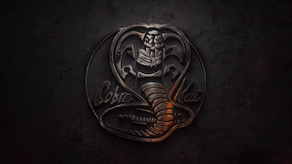

<!DOCTYPE html>
<html lang="en">
    <head>
        <meta charset="UTF-8" />
        <meta name="viewport" content="width=device-width, initial-scale=1.0" />
        <link href="https://cdn.jsdelivr.net/npm/bootstrap@5.3.3/dist/css/bootstrap.min.css" rel="stylesheet" integrity="sha384-QWTKZyjpPEjISv5WaRU9OFeRpok6YctnYmDr5pNlyT2bRjXh0JMhjY6hW+ALEwIH"  crossorigin="anonymous"  />
        <link rel="stylesheet" href="style.css" />
        <title>Meu portfólio</title>
      </head>
    
 <body></body>
</html>
<body>
    
    <p> Essa é uma serie, chamada Cobra Kai</p>
    <h1> uma serie de ação </h1>
    <p> Ela é uma continuação de um classico filme "karate kid" lançado nos anos 80.
        A trama se passa mais de 30 anos após os eventos do filme original e foca na rivalidade entre Johnny lawrence e Daniel LaRusso.
        Mistura nostalgia com nossas historias trazendo humor,drama e lutas.
    </p>
    <p>Apresenta habilidades como:</p>
     <p>Karate e técnicas de lutas;<p>
     <p>resiliência</p>
     <p>controle emocional;<p>
     <p>liderança;<p>
     <p>trabalho em equipe:<p>
     <p>estrategia e tatica.</p>
   <div>
<body>
    <body>
        <header class="container">
            <script src="https://cdn.jsdelivr.net/npm/bootstrap@5.3.5/dist/js/bootstrap.bundle.min.js" integrity="sha384-k6d4wzSIapyDyv1kpU366/PK5hCdSbCRGRCMv+eplOQJWyd1fbcAu9OCUj5zNLiq" crossorigin="anonymous"></script>
        </header>
      
      
        <script
          src="https://cdn.jsdelivr.net/npm/bootstrap@5.3.3/dist/js/bootstrap.bundle.min.js"
          integrity="sha384-YvpcrYf0tY3lHB60NNkmXc5s9fDVZLESaAA55NDzOxhy9GkcIdslK1eN7N6jIeHz"
          crossorigin="anonymous"
        ></script>
      </body>


